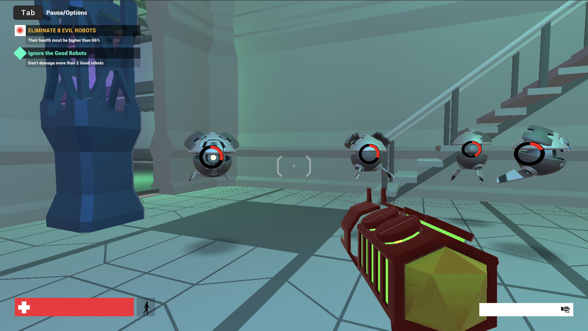
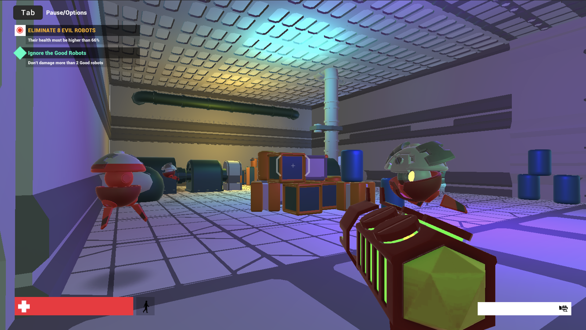
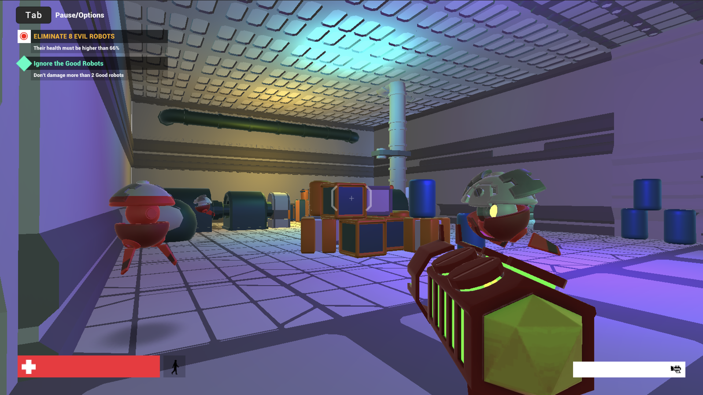
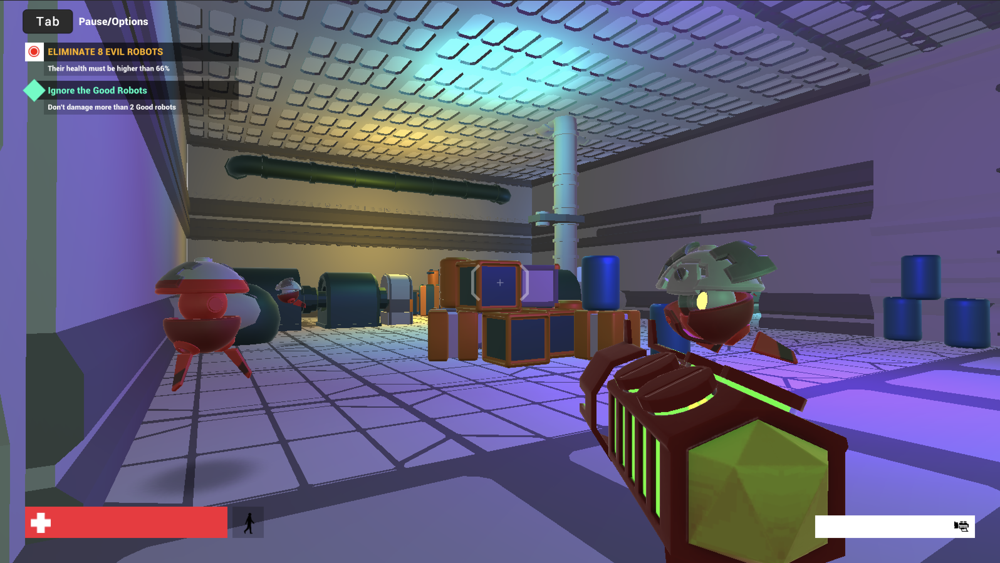

RobotLife
RobotLife is a First Person Shooter video game implemented during my Research Internship at Inria Saclay. I implemented this game with the ultimate goal of conducting a empirical evaluation of situated visualization in motion in the context of video games. The game combines level design and game mechanics with data visualization to evaluate how motion factors influence data visualizations' readability in video games. The game takes place in a sci-fi robot factory. The player has to complete tasks such as eliminating evil robots and repair a damaged engine to escape the factory. The project is implemented entirely in Unity, programming in C#, starting from an official Unity Template Level.
Ask me about the project!

 


MuseX
Sept 2020 - Feb 2021
MuseX is a Smart Space Software, aimed at differentiating the teaching proposal in elementary schools, offering a special experience to children. Initially designed for the Magic Room of the I3Lab of Politecnico di Milano, MuseX proposes a 360° experience inside a Natural History Museum, completed by 3 interactive minigames. The software is implemented in Unity (C#) and it embeds technologies such as projectors, smart objects and body movement recognition technologies (programmed for Kinect).
Find the project on

MenuCube
Jan 2022 - Feb 2022
MenuCube is an Augmented Reality application manipulated by tangible interactions with a 10 x 10 cm physical cube and various paper markers. It is far more powerful than a normal Menu-Card as it gives the customer the possibility to see the available dishes displayed in 3D and interact with them in real-time with his / her smartphone camera. To make the application very easy to use as everybody should be able to understand it without explanation, the interface is kept very simple, yet powerful. The application is implemented using Unity (C#) and the Vuforia package for AR and target recognition.
Find the project on

Invation
Sept 2020 - Jan 2021
This project consisted in creating a website for a company fiction of imagination: Invation. Invations come from Invention + Innovation and it's based on three main pillars: Invations (Products), Invationers (Employees) and Visions (Areas of products). The website is implemented with Nuxt and Vue.js for the front-end, and Node.js, Axios and Postgree database for the backend part. The project inclused also a conversational agent, namely a Chatbot, that we named Charlie. This project comprises a full design process before implementation that showcase my skills as UX designer. Particular focus has been given to wireframing, usability and accessibility.
Find the project on


MusicHub
Nov 2021 - Dec 2021
MusicHub is a Design of Interactive System project that consists in the design of a possibile new tool for music softwares. In particulare, MusicHub is a tool that allows users to divide a track in multiple branches to experiment with different versions of the same track, testing out with different sounds, effects and results. Starting fromstory interviews, we performed a full design process comprising breakdown analysis, ideas brainstorming, user case scenarios, user personas, paper prototyping and re-design phase.